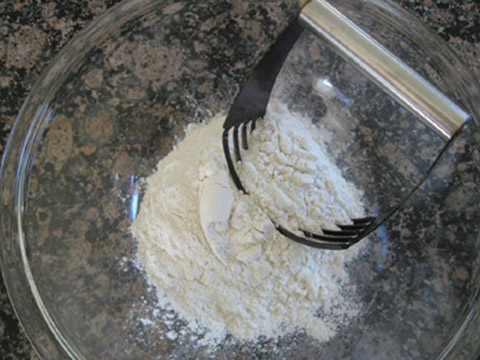

-

Make the dough: mix the flour, yeast and salt together in a large mixing bowl and stir in the olive oil and milk. Gradually add the water, mixing well to form a soft dough.
Complete! -

Turn the dough out on to a floured work surface and knead for about five minutes, until smooth and elastic. Transfer to a clean bowl, cover with a damp tea towel and leave to rise for about 1½ hours, until doubled in size.